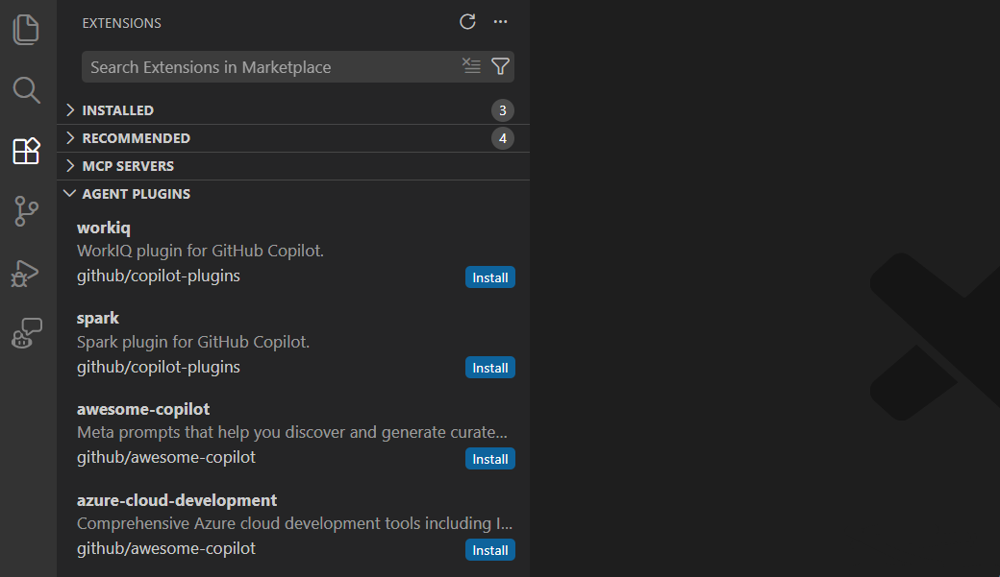
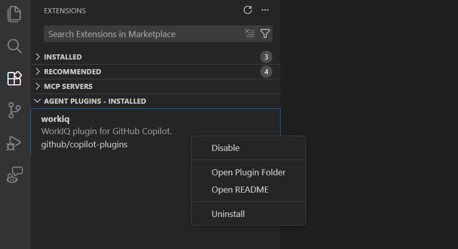

VS Code 中的代理插件（预览版）
代理插件是预打包的代理自定义捆绑包，你可以从 Visual Studio Code 中的插件市场发现并安装。单个插件可以提供任意组合的斜杠命令、代理技能、自定义代理、钩子和 MCP 服务器。
插件与你本地定义的自定义设置并行工作。安装插件后，其命令、技能、代理、钩子和 MCP 服务器会出现在聊天中。
[!NOTE]
代理插件目前处于预览阶段。使用 setting(chat.plugins.enabled) 设置来启用或禁用对代理插件的支持。
插件提供的内容
代理插件可以捆绑以下一种或多种自定义类型：
- 斜杠命令：可在聊天中使用
/调用的附加命令 - 技能：包含指令、脚本和资源的代理技能，可按需加载
- 代理：具有专用角色和工具配置的自定义代理
- 钩子：在代理生命周期节点执行 shell 命令的钩子
- MCP 服务器：用于外部工具集成的 MCP 服务器
例如，一个测试插件可能包含一个带有脚本的 test-runner 技能、一个带有只读工具的 test-reviewer 代理，以及一个用于测试报告仪表板的 MCP 服务器。插件目录结构如下所示：
my-testing-plugin/
plugin.json # 插件元数据和配置
skills/
test-runner/
SKILL.md # 测试技能指令
run-tests.sh # 支持脚本
agents/
test-reviewer.agent.md # 代码审查代理
hooks/
hooks.json # 钩子配置
scripts/
validate-tests.sh # 钩子脚本
.mcp.json # MCP 服务器定义安装后，插件提供的自定义项会与本地定义的自定义项一起显示。例如，插件中的技能会出现在配置技能菜单中，插件中的 MCP 服务器会出现在 MCP 服务器列表中。
[!CAUTION]
插件可能包含在你的计算机上运行代码的钩子和 MCP 服务器。安装前请审查插件内容和发布者，尤其是来自社区市场的插件。
插件元数据 (plugin.json)
每个插件都需要在其根目录下有一个 plugin.json 清单文件。此文件定义插件的身份并告诉 VS Code 在哪里找到其组件。
必填字段
| 字段 | 类型 | 描述 | ||
|---|---|---|---|---|
| ------- | ------ | ------------- | ||
name | string | kebab-case 格式的插件名称。只允许小写字母、数字和连字符。最多 64 个字符。不要使用斜杠、冒号或命名空间前缀（例如，my-plugin 有效，但 myorg/my-plugin 无效）。无效名称会导致插件静默加载失败。 |
可选字段
| 字段 | 类型 | 描述 | ||
|---|---|---|---|---|
| ------- | ------ | ------------- | ||
description | string | 插件的简要描述。最多 1024 个字符。 | ||
version | string | 语义版本（例如 1.0.0）。当插件在市场列表中列出时，版本可以同时出现在 plugin.json 和 marketplace.json 插件条目中。发布更改时请在 plugin.json 中更新版本号。 | ||
author | object | 作者信息，包含 name（必填）、email 和 url 字段。 | ||
skills | string 或 string[] | 技能目录的路径。默认为 skills/。 | ||
agents | string 或 string[] | 代理目录的路径。默认为 agents/。 | ||
hooks | string 或 object | 钩子配置文件的路径或内联钩子对象。 | ||
mcpServers | string 或 object | MCP 配置文件（例如 .mcp.json）的路径或内联服务器定义。 |
完整字段参考，请参阅 GitHub Copilot CLI 插件参考。
plugin.json 示例
{
"name": "my-dev-tools",
"description": "React development utilities",
"version": "1.2.0",
"author": {
"name": "Jane Doe"
},
"skills": "skills/",
"agents": "agents/",
"hooks": "hooks.json",
"mcpServers": ".mcp.json"
}插件格式
VS Code 通过检查格式特定的清单路径来自动检测插件格式。当没有找到其他格式标记时，Copilot 格式用作默认格式。
| 插件格式 | 插件文件路径 | ||
|---|---|---|---|
| --------------- | ------------------ | ||
| Claude | .claude-plugin/plugin.json | ||
| OpenPlugin | .plugin/plugin.json |
插件环境变量
某些插件格式提供一个根令牌，可在钩子命令和 MCP 服务器配置中使用，以引用插件目录内的文件。VS Code 在运行时展开该令牌，并将其设置为钩子或服务器进程中的环境变量。
| 插件格式 | 插件根令牌 | ||
|---|---|---|---|
| --------------- | ------------------ | ||
| Claude | ${CLAUDE_PLUGIN_ROOT} | ||
| Copilot | （未定义） | ||
| OpenPlugin | ${PLUGIN_ROOT} |
插件中的钩子
插件可以包含在代理生命周期节点运行 shell 命令的钩子。插件钩子与你的工作区和用户级钩子并行工作。启用插件后，其钩子会与为同一事件配置的任何其他钩子一起触发。
钩子文件位置
钩子文件位置取决于插件格式：
| 插件格式 | 钩子文件路径 | ||
|---|---|---|---|
| --------------- | ---------------- | ||
| Claude | hooks/hooks.json | ||
| Copilot | hooks.json（在插件根目录下） |
VS Code 自动检测插件格式并自动发现钩子文件。
my-plugin/
hooks/
hooks.json # 钩子配置（Claude 格式）
scripts/
format.sh # hooks.json 引用的钩子脚本钩子配置格式
插件钩子使用与工作区钩子相同的基础格式。VS Code 解析 Claude Code 钩子配置，包括匹配器语法。目前，VS Code 忽略匹配器值，因此钩子会在每个匹配事件上运行。
平铺格式（与工作区钩子相同）：
{
"hooks": {
"PostToolUse": [
{
"type": "command",
"command": "${CLAUDE_PLUGIN_ROOT}/scripts/format.sh"
}
]
}
}匹配器格式（Claude 兼容语法）：
{
"hooks": {
"PostToolUse": [
{
"matcher": "Write|Edit",
"hooks": [
{
"type": "command",
"command": "${CLAUDE_PLUGIN_ROOT}/scripts/format.sh"
}
]
}
]
}
}VS Code 解析 matcher 字段以保持与 Claude Code 的兼容性，但目前忽略匹配器值。如果需要在 VS Code 中过滤钩子行为，请在钩子脚本内部检查事件输入。
在钩子命令中引用插件路径
对于 Claude 格式的插件，在钩子命令中使用 ${CLAUDE_PLUGIN_ROOT} 令牌来引用插件目录内的脚本和文件。VS Code 在运行时将此令牌展开为插件的绝对路径，并为钩子进程设置 CLAUDE_PLUGIN_ROOT 环境变量。在脚本内部，通过 $CLAUDE_PLUGIN_ROOT（Windows 上为 %CLAUDE_PLUGIN_ROOT%）访问此变量。
这一点很重要，因为插件安装在工作区之外的位置，因此不能使用相对路径。
{
"hooks": {
"PreToolUse": [
{
"type": "command",
"command": "${CLAUDE_PLUGIN_ROOT}/scripts/validate-tool.sh"
}
]
}
}支持的钩子事件
插件钩子支持与工作区钩子相同的生命周期事件：SessionStart、UserPromptSubmit、PreToolUse、PostToolUse、PreCompact、SubagentStart、SubagentStop 和 Stop。有关每个事件的详细信息，请参阅钩子生命周期事件。
插件钩子与其他钩子如何交互
插件钩子与工作区级和用户级钩子并行运行。当多个钩子针对同一事件时，所有钩子都会执行。对于 PreToolUse 钩子，所有钩子中最严格的权限决定胜出：deny 覆盖 ask，ask 覆盖 allow。
禁用插件也会禁用其钩子。你可以从扩展视图全局或为特定工作区启用或禁用插件。
插件中的 MCP 服务器
插件可以捆绑 MCP 服务器，为代理提供额外的工具和数据源。插件 MCP 服务器在插件启用时自动启动，在插件禁用时停止。
MCP 配置文件
将 MCP 服务器定义放在插件根目录下的 .mcp.json 中。VS Code 在加载插件时自动发现此文件。
my-plugin/
.mcp.json # MCP 服务器定义
servers/
db-server # 服务器可执行文件
config.json # 服务器配置MCP 配置格式
插件 MCP 服务器在顶层的 mcpServers 对象中定义。每个服务器条目指定命令、参数和可选的环境变量：
{
"mcpServers": {
"plugin-database": {
"command": "${CLAUDE_PLUGIN_ROOT}/servers/db-server",
"args": ["--config", "${CLAUDE_PLUGIN_ROOT}/config.json"],
"env": {
"DB_PATH": "${CLAUDE_PLUGIN_ROOT}/data"
}
},
"plugin-api": {
"command": "npx",
"args": ["@company/mcp-server", "--plugin-mode"],
"cwd": "${CLAUDE_PLUGIN_ROOT}"
}
}
}[!NOTE]
顶层的键是mcpServers（不是工作区mcp.json中使用的servers）。
在服务器配置中引用插件路径
对于 Claude 格式的插件，在 MCP 服务器字段中使用 ${CLAUDE_PLUGIN_ROOT} 令牌来引用插件目录内的可执行文件和文件。VS Code 在以下字段中展开此令牌：
command：可执行文件路径args：命令行参数cwd：工作目录env：环境变量值envFile：环境文件路径url：用于基于 HTTP 的 MCP 服务器headers：HTTP 标头值
VS Code 还会向服务器进程注入 CLAUDE_PLUGIN_ROOT 环境变量，以便服务器代码在运行时访问插件路径。
插件 MCP 服务器与其他服务器如何交互
插件 MCP 服务器与工作区和用户级 MCP 服务器一起显示。你可以通过相同的工具来管理它们：
- 在聊天视图中选择配置工具，查看来自所有 MCP 服务器（包括插件服务器）的工具。
- 从命令面板运行 MCP: List Servers，查看插件服务器与其他服务器并列显示。
安装插件时，插件 MCP 服务器默认被视为可信。与工作区 MCP 服务器不同，它们在启动时不会显示单独的可信提示。
禁用插件会停止其 MCP 服务器。已停止服务器提供的工具在聊天中不再可用。
发现和安装插件
VS Code 在扩展侧边栏中提供了一个专用视图，用于浏览和管理代理插件。
浏览可用插件
- 打开扩展视图（
kb(workbench.view.extensions)），然后在搜索字段中输入@agentPlugins。
或者，选择扩展侧边栏中的更多操作（三个点）图标，然后选择视图 > 代理插件。
- 浏览来自已配置市场的可用插件列表。

- 选择安装将插件安装到你的用户配置文件中。
首次从新市场安装插件时，VS Code 会显示可信提示。确认前请审查市场来源。
从源安装插件
你可以直接从 Git 仓库 URL 安装插件，无需先添加完整的市场。
- 从命令面板运行 Chat: Install Plugin From Source。
- 或者，在代理自定义编辑器的插件页面上选择 + 按钮。
输入 Git 仓库 URL（例如 https://github.com/rwoll/markdown-review），VS Code 会克隆并安装该插件。
由 GitHub Copilot CLI 安装的插件
VS Code 会自动发现你通过 GitHub Copilot CLI 安装的插件，以便你也可以在 VS Code 中使用它们。来自 ~/.copilot/installed-plugins/ 的插件会与从市场或源安装的插件一起显示在代理插件 - 已安装视图中。
CLI 将插件存储在 ~/.copilot/installed-plugins/ 下。直接从 Git URL（而非从市场）安装的插件位于 _direct 桶中，例如 ~/.copilot/installed-plugins/_direct/github--moda-linter--copilot-plugin/。
查看已安装的插件
扩展视图中的代理插件 - 已安装视图显示你已安装的插件。在此视图中，你可以启用、禁用或卸载插件。

你还可以从聊天视图中选择齿轮图标 > 插件来管理已安装的插件。
启用或禁用插件
你可以全局或为特定工作区启用或禁用插件：
- 在扩展视图的代理插件 - 已安装部分中，使用插件的上下文菜单。
- 使用代理自定义编辑器切换插件的启用状态。
启用/禁用状态与插件配置分开存储，因此不会影响共享的工作区设置。
禁用插件后，其技能、代理、钩子、MCP 服务器和斜杠命令不再可用。例如，已禁用插件中的技能不会出现在 Chat: Configure Skills 中。已禁用的插件在代理自定义编辑器和扩展视图中以变暗样式显示。
卸载插件
要移除插件，请在代理插件 - 已安装视图中右键单击它，然后选择卸载。从外部源（如 npm、PyPI 或外部 Git 仓库）安装的插件会从磁盘中移除。内联在市场仓库中的插件会保留在磁盘上，但不再处于活动状态。
配置插件市场
默认情况下，VS Code 从 copilot-plugins 和 awesome-copilot 发现插件。你可以使用 setting(chat.plugins.marketplaces) 设置添加其他市场。
市场是包含插件定义的 Git 仓库。你可以使用以下几种格式引用它们：
- 简写：
owner/repo用于公共 GitHub 仓库。例如anthropics/claude-code。 - HTTPS git 远程地址：以
.git结尾的完整 URL。例如https://github.com/anthropics/claude-code.git。 - SCP 风格 git 远程地址：SSH 风格引用。例如
git@github.com:anthropics/claude-code.git。 - file URI：指向已克隆到磁盘上的市场仓库的
file:///路径。
也支持私有仓库。如果公共查找失败，VS Code 会回退到直接克隆仓库。
市场插件还可以引用外部包源，如 npm 或 PyPI 包。有关完整的市场插件架构，请参阅 Claude Code 插件市场文档。
// settings.json
"chat.plugins.marketplaces": [
"anthropics/claude-code"
][!NOTE]
企业管理员可以集中控制开发人员可用的插件和市场。有关更多信息，请参阅管理代理插件和市场。
使用本地插件
如果手动克隆或下载了插件，可以使用 setting(chat.pluginLocations) 设置注册它。此设置将本地插件目录路径映射到启用或禁用状态。
// settings.json
"chat.pluginLocations": {
"/path/to/my-plugin": true,
"/path/to/another-plugin": false
}将值设置为 true 以启用插件，或设置为 false 以保持其注册但处于禁用状态。
更新插件
VS Code 在从命令面板运行 Extensions: Check for Extension Updates 时检查插件更新，或在启用 setting(extensions.autoUpdate) 时每 24 小时自动检查更新。
更新会从克隆的市场仓库拉取更改，并检查外部来源插件的新版本。
来自 npm 或 PyPI 的插件永远不会自动更新。相反，它们会在扩展视图中显示更新按钮。选择该按钮会在运行安装命令之前提示你确认。如果在后台检查期间发现更新，则不会采取任何操作，直到你明确选择更新。
工作区插件推荐
项目可以通过在工作区设置（.claude/settings.json 或 .github/copilot/settings.json）中配置插件设置来为团队成员推荐插件。
首次发送聊天消息时，VS Code 会显示通知。你可以通过打开扩展视图并按 @agentPlugins @recommended 过滤来查看推荐的插件。
在设置文件中指定以下字段来配置工作区插件推荐：
extraKnownMarketplaces：为项目注册额外的市场。这些市场在你于扩展视图中搜索@agentPlugins时显示。enabledPlugins：列出应默认启用的插件。{ "extraKnownMarketplaces": { "company-tools": { "source": { "source": "github", "repo": "your-org/plugin-marketplace" } } }, "enabledPlugins": { "code-formatter@company-tools": true } }跨工具兼容性
插件格式在 VS Code、GitHub Copilot CLI 和 Claude Code 之间共享。单个插件仓库可以在所有三个工具中工作。
VS Code 通过在多个位置查找 plugin.json 来自动检测插件格式，按以下顺序检查：
.plugin/plugin.jsonplugin.json（在插件根目录下）.github/plugin/plugin.json.claude-plugin/plugin.json
如果为多个工具编写插件，可以将 plugin.json 放在根目录下，并在格式特定目录中使用符号链接或副本。在所有副本中保持 name 字段相同，以避免冲突。
需要注意的跨工具关键差异：
- 钩子文件位置：Claude 格式插件期望钩子在
hooks/hooks.json中，而 Copilot 格式插件使用根目录下的hooks.json。VS Code 自动检测格式。 - 插件根令牌：Claude 格式插件使用
${CLAUDE_PLUGIN_ROOT}来引用插件目录内的文件。此令牌在 Copilot 格式插件中不可用。 - 技能命名：所有工具都要求
SKILL.md中使用纯 kebab-case 名称。命名空间前缀（如myorg/skillname）会导致静默加载失败。
有关工具特定的详细信息，请参阅 GitHub Copilot CLI 插件参考和 Claude Code 插件市场文档。
故障排除
安装后插件未出现
- 确认代理插件已启用：检查
setting(chat.plugins.enabled)是否设置为true。 - 验证
plugin.json中插件的name字段仅使用小写字母、数字和连字符。斜杠、冒号或其他特殊字符会导致插件静默加载失败。 - 检查
plugin.json是否位于被识别的目录位置（参见跨工具兼容性）。插件中的技能不加载
- 打开
SKILL.md文件，检查 YAML 前置元数据中的name字段。名称必须是纯 kebab-case 格式，不带命名空间前缀（例如test-runner，而不是myorg/test-runner）。无效名称会导致技能被静默跳过。 - 确保技能目录名称与
SKILL.md前置元数据中的name字段匹配。插件版本不更新
- 在推送更改之前，请在
plugin.json中（以及marketplace.json插件条目中，如适用）更新version字段。 - 从命令面板运行 Extensions: Check for Extension Updates 触发更新检查。
安装失败并显示 'destination path already exists'
当之前的安装留下缓存数据时可能会发生这种情况。删除缓存的插件目录并重试：
- macOS：
~/Library/Application Support/Code/agentPlugins/github.com/{org}/{repo} - Linux：
~/.config/Code/agentPlugins/github.com/{org}/{repo} - Windows：
%APPDATA%\Code\agentPlugins\github.com\{org}\{repo}相关资源
- 为 GitHub Copilot CLI 查找和安装插件
- GitHub Copilot CLI 插件参考
- 使用代理技能
- 添加和管理 MCP 服务器
- 使用钩子实现生命周期自动化
- 创建自定义代理